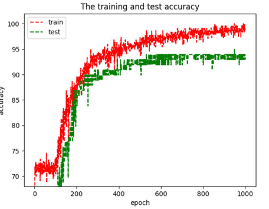
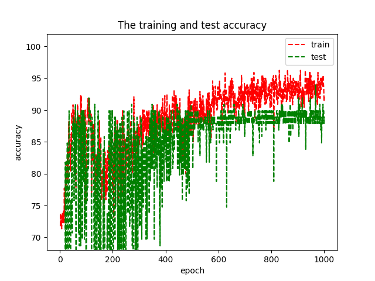
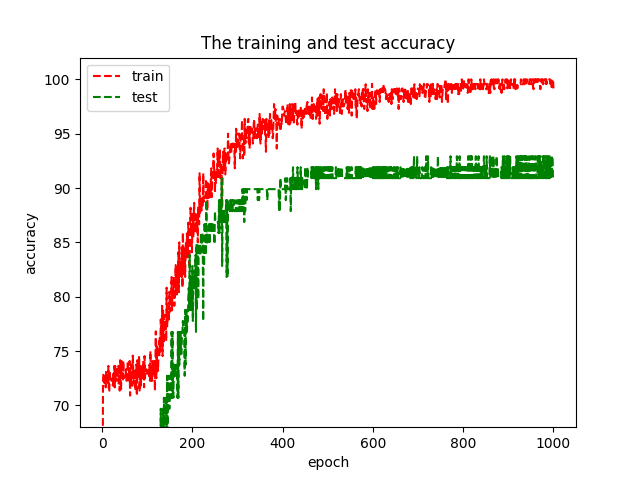
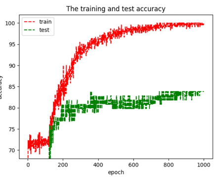
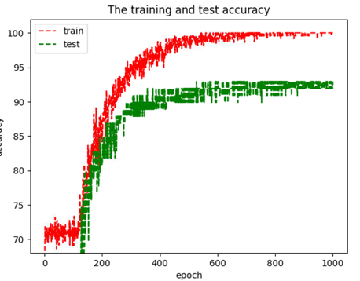

Graph-based MCI/NC Analysis with PET images
Data Description and Objective
We used ADNI2-AV45 PET image dataset with 419 subjects in total. The PET images are of 2mm-resolution and the shape is (91, 109, 91). There is only one image for a single subject with an associated label: AD (Alzheimer's Disease), LMCI (Late Mild Cognitive Impairment), EMCI (Early MCI) or NC (Normal Control).
Since current diagnosis of MCI is done through various types of assessment tests, we intend to find a intrinsic diagnosis standard for MCI patients from both the brain structural / functional connection network and brain region signals instead. By the analysis of PET-based brain network we can find the changes of volume and signal in which regions have the most severe influence on the process of MCI, and thus provide a better insight for the prevention of MCI and also more accurate diagnosis for the severe disease.
Graph Construction
We did not use the k-NN graph as the original paper, as that could make the network focus only on local features rather than global connections.
Our method is listed as follows:
- Extract 120-D signals from AAL-2 atlas (120 brain regions) in PET images, and put region signals from all subjects together to construct a data matrix of shape (120, 419);
-

- Compute correlation of the 120 regions, and use the correlation matrix as the adjacency matrix with a cut-off on entries at threshold 0.7;
-

Network Structure
Notations for network architectures:
- FCk for a Fully Connected Layer with k hidden units;
- Pk for a Graph Pooling Layer of size and stride k;
- GCk for a graph convolutional layer with k feature maps.
With $x$ as the input signal, $T_k$ as the (k-th) Chebyshev Polynomial, $L$ as the graph Laplacian, $K$ as the number of the kernels, and $\theta$ as the network parameter, the GC layer is fomulated by this equation:
$$G_L(x; \theta)=\sum_{k=0}^{K-1}\theta_kT_k(L)x.$$
All FCk and GCk layers are followed by a LeakyReLU activation with $\alpha=0.01$.
The final layer is a softmax regression and the loss energy E is the cross-entropy with an l2 regularization on the weights of all FCk layers. Mini-batches are of size S = 20.
Our final network structure is denoted by GC32-P4-GC64-P4-FC512 with kernel number $K=25$ at each conv layer.
Advantages of Our Graph-based Methods
- Graph-based methods are more robust than image-based ones, because they use the region-level average signals rather than the voxel-level signals (in image-based methods), which could lead to instability when images are noisy on voxl-level;
- Incorporating any graph (even a randomly-generated graph with the same number of edges as the correlation graph) as a part of input almost guarantees a slight boosting in performance (compared with XGBoost);
- With our correlation graph as the input, the ChebNet yields the highest average classification accuracy (~93%) among all region-based experiments. The network performance with correlation graph is also much stabler than with random graphs.
Experimental Settings
- We randomly split the original dataset for 70% training and 30% test.
- To prevent "Dead ReLU" problem, we not only shrink the learning rate to $10^{-3}$, but also use a "LeakyReLU" activation function instead of the original "ReLU".
- The initial learning rate decays by 50% every time the training loss decreases by 50%, and this shrinkage operation has a cooldown of 150 epochs.
- We train the model for 1000 epochs in total.
- The l2 regularization coefficient is $10^{-4}$.
Results
- 93% accuracy (on average).
- 
Graph-based baselines
- If we let $L=0$ (i.e. a graph with only self-loops), the Chebyshev convolutional layer degrades to a fully-connected layer ($G_0(x; \theta)=\sum_{k=0}^{K-1}\theta_kT_k(L)x=\theta_0x$).
- Thus the classification result is guaranteed to be better than FCN since we add some extra information into the classification process whenever $L\ne0$.
- To compare our construction of correlation graph with other graphs, we conducted extra experiments on the same training/test datasets.
- Empty Graph (with only self-loops)
- Below (left) is an example for empty graph (90% acc. with very unstable performance and very slow training speed.)
- When switching to correlation graph (right), the accuracy is about 92%.
- Overall, we not only have a (close, but still) better accuracy in correlation group, but also a much shorter convergence time (400 epochs versus ~1000 epochs). Considering that the connected correlation graph accelerates training process for another 2x (per epoch), the correlation method is significantly better than empty graph (i.e. fully connected layers).
- 
- Random Graph (with the same number of edges as the corralation graph with threshold=0.7)
- The result is 89% on average, but of much larger variance. Besides, on 90% of the experiments the random-graph ChebNet yields lower accuracy than the correlation-graph ChebNet on the same training/test dataset.
- Below are two examples for random graphs:
- 
Region-based baselines
- XGBoost Classifier: 88% on average (5-fold).
Image-based baselines
- We extracted the 22nd, 45th and 67th slices from the original (91, 109, 91) 3D PET images and used them as the RGB channels respectively. We resized the slices to (299, 299) and use them as the input to some Convolutional Neural Network(CNN)s.
- The training process is either fine-tuning (if the network is initialized from pretrained weights on ImageNet) or simple training (if the network is randomly initialized).
- Results:
- Non-pretrained Inception-V3 / ResNet-50: 83% accuracy on average.
- Pretrained Inception-V3: 96+/-1%.
More experiments in image-based methods
- In the power atlas experiment, there are some regions whose signals all equal to zero in MCI group but are all non-zero in NC groups. We are not sure if they have a serious impact on image-based experiment.
- We plan to add a noise on the images, which may damage the performance of image-based methods but have minor impact on graph-based experiments.
Feature importance of graph-based experiments
- How will we analyze the feature importance of graph neural networks? The convolutional layer itself is another version of fully-connected layer with weight limited in a narrower vector space ($y=\text{LeakyRelu}(g_{\theta}(L)x)$). I'm not quite sure how to analyze it.
- I sent an e-mail to the author of ChebNet and hope to discuss the issue with him.